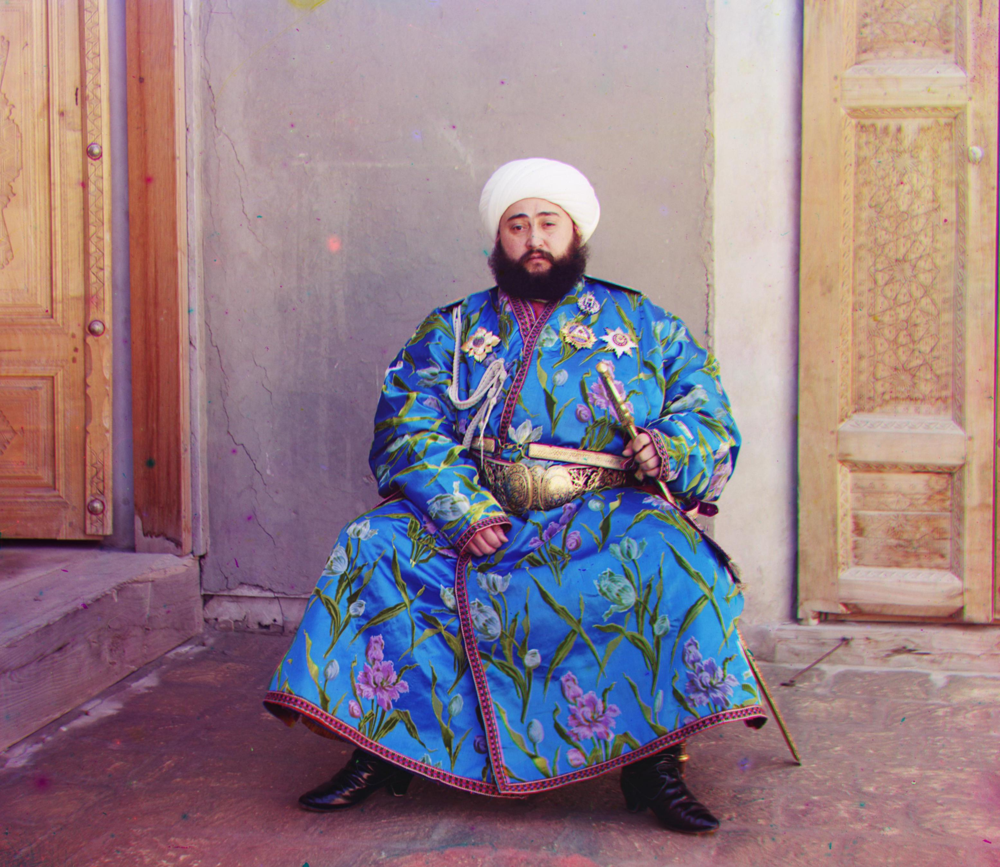

Left: Glass plate image of Emir of Bukhara. Right: Aligned 3-color (RGB) image.
Overview
This project takes digitized Prokudin-Gorskii glass plate images and produces their respective color images.
The glass plates contain images from three color channels, RGB, which are extracted and aligned with image
processing techniques. More specifically, the R and G components are aligned to the B component.
Coarsest Image
The alignment process starts at the coarsest (smallest) scale. The image is downsampled until its
shortest side is rescaled to be as close to 100 pixels as possible. Then, displacements within +/-8% of the
image width and length are iterated through and tested. The displacement that matches closest
with the B part (more in the "Image Matching Evaluation Metric" section) is then returned. One of
these searches reflects the single-scale implementation.
Coarse-to-Fine Image Pyramid
Because single-scale exhaustive search would be too expensive for large (e.g. .tif) images, the procedure
starts with the coarsest image and works its way up the "image pyramid." The images and optimal
displacements are scaled up by a factor of 2, and for larger images, only displacements within +/-1 pixel
of the optimal displacement are evaluated. This strategy significant reduces the number of displacements
tested and, therefore, alignment speed.
Image Matching Evaluation Metric
Two image matching evaluation merics are used:
Since the SSIM metric is more advanced, it performs better for images like emir.tif, but at the cost of running ~4x slower.
|
G (x or width, y or height): (2, 5) R (x or width, y or height): (3, 12) |
G (x or width, y or height): (2, -3) R (x or width, y or height): (2, 3) |
G (x or width, y or height): (2, 3) R (x or width, y or height): (3, 6) |
|
G (x or width, y or height): (-8, 25) R (x or width, y or height): (-5, 58) |
G (x or width, y or height): (24, 49) R (x or width, y or height): (42, 91) |
G (x or width, y or height): (16, 60) R (x or width, y or height): (14, 124) |
|
G (x or width, y or height): (17, 40) R(x or width, y or height): (23, 89) |

G (x or width, y or height): (8, 55) R (x or width, y or height): (12, 110) |
G (x or width, y or height): (9, 82) R (x or width, y or height): (11, 177) |
|
G (x or width, y or height): (26, 51) R (x or width, y or height): (36, 108) |
G (x or width, y or height): (-11, 33) R (x or width, y or height): (-26, 140) |

G (x or width, y or height): (29, 79) R (x or width, y or height): (31, 175) |
|
G (x or width, y or height): (13, 55) R (x or width, y or height): (10, 112) |
G (x or width, y or height): (6, 42) R (x or width, y or height): (32, 87) |
|
G (x or width, y or height): (3, 25) R (x or width, y or height): (-4, 58) |
G (x or width, y or height): (21, 50) R (x or width, y or height): (40, 105) |
Canny Edge Detection
This automatic cropping idea starts with detecting all edges in the color image using a canny edge
detector.
Create Cropping Mask
Next, only edges in the outer 10% of the image are kept and evaluated as potential borders. Iterating from
the innermost to outermost potential borders, a border is chosen if it is "straight enough" -- the
qualification is making up at least a certain threshold proportion of the full straight line. The final
borders can be visualized by a mask.
Crop Image
The original image is cropped with the determined borders.
|
|
|
|
|
(Top, Bottom, Left, Right): (14, 314, 19, 379) |
|
|
|
|
|
|
(Top, Bottom, Left, Right): (8, 315, 14, 371) |
|